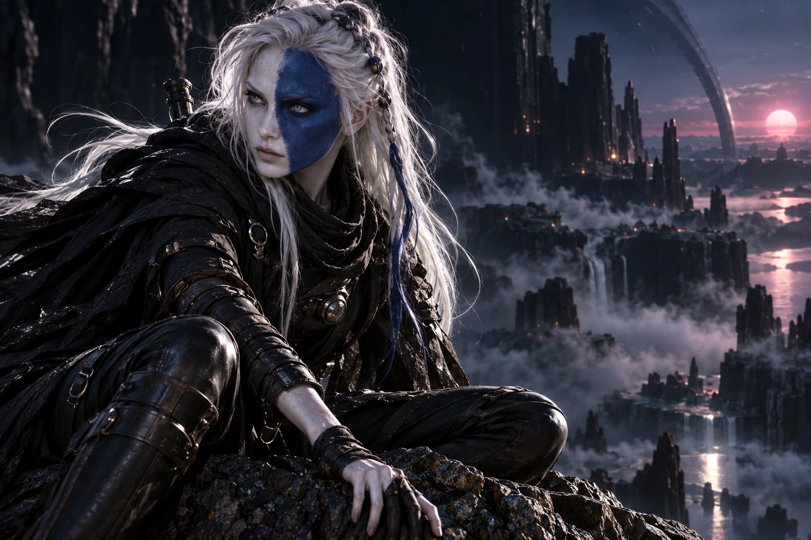
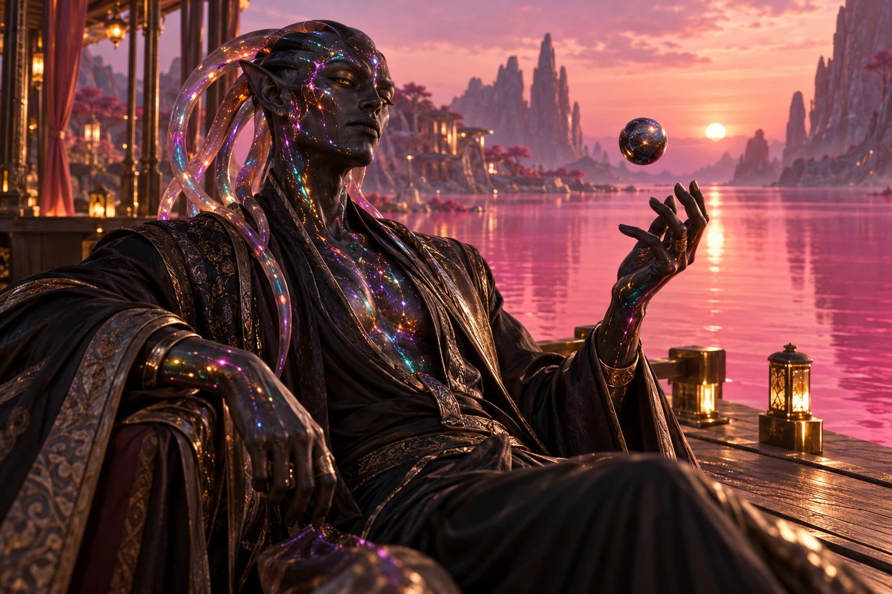
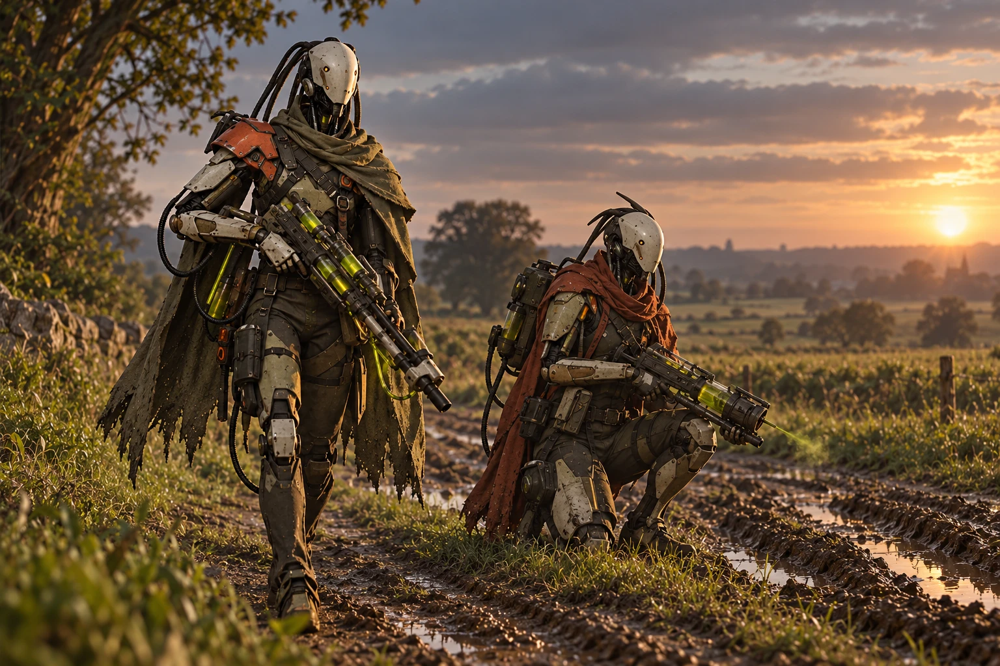
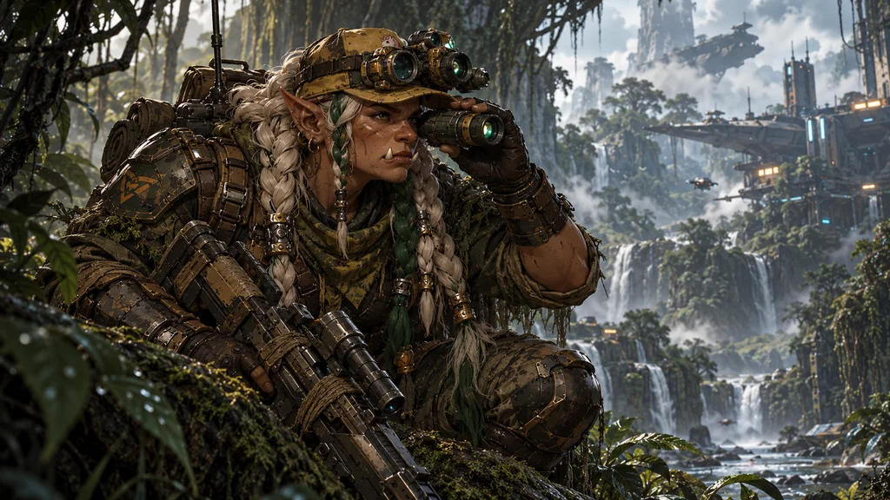
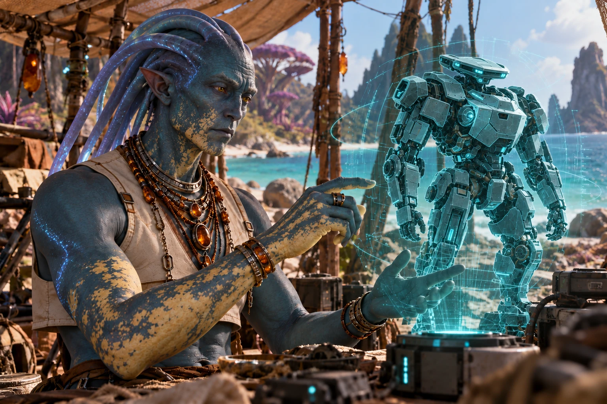

Atlas Wanderer
Un jeu de gestion d'équipage de vaisseau, en space opera. Deux héros, un équipage de serviteurs, un donjon à explorer : chaque partie est une suite de renforts et de combats automatiques contre un Boss.
Le prototype est en cours de construction ; les valeurs (revenus, coûts, PV) sont des valeurs de test.





Un équipage
Le joueur gère un équipage et son vaisseau. Les héros sont ceux que l'on fait progresser, de partie en partie.
Des donjons
La boucle principale est l'exploration d'un donjon : une suite de salles, chacune précédée d'un renfort et conclue par un combat automatique.
Aucune expédition ne se ressemble
Chaque partie repart d'un plateau vide : un renfort à tirer, un Boss à faire plier, des synergies à inventer. Rien ne se transmet d'une expédition à l'autre, sauf ce qui compte vraiment : vos héros et votre vaisseau, qui progressent de partie en partie.